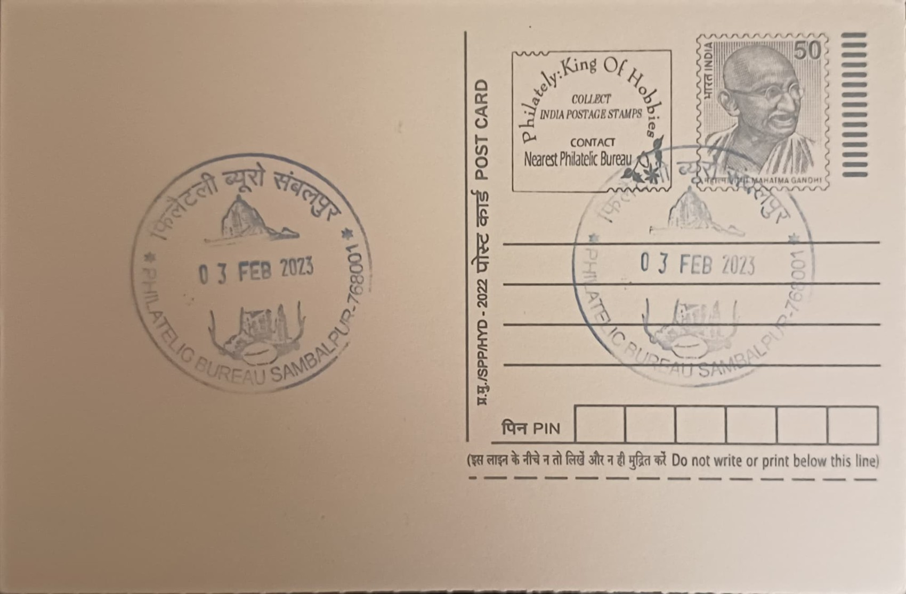

Maa Samaleswari Temple and Musical Instruments
ମା' ସାମଲେଶ୍ୱରୀ ମନ୍ଦିର ଓ ବାଦ୍ୟଯନ୍ତ୍ର


The Samaleswari Temple traces its name to Samalei, a tutelary deity worshipped by the tribal communities of the Mahanadi valley long before Sambalpur existed as a town. When Balaram Dev of the Chauhan dynasty established his capital at the site in the mid-16th century, he is said to have adopted the local goddess Samalei as the ruling family's chosen deity in an effort to win the allegiance of the region's indigenous population and consolidate his hold over the area. The settlement that grew around her shrine subsequently took its own name from the goddess, giving rise to the town of Sambalpur, so that the city's identity and the temple's origin remain inseparably linked in local tradition.
As the presiding deity of Sambalpur and the wider western Odisha region, Samaleswari is regarded as a form of Shakti and is identified by devotees with Durga, Mahalakshmi, Mahasaraswati and Adishakti, reflecting a gradual absorption of a tribal folk goddess into the mainstream Shakta fold. Some local tradition and references in the Odia Mahabharata associate the Mahanadi riverbank site with Shaktipitha status, lending the temple an antiquity that predates its formal construction under the Chauhan rulers. The shrine functions today as the principal religious institution of the Sambalpur region, drawing devotees from across western Odisha and neighbouring Chhattisgarh, particularly for Shakti-centred observances.
The temple in its present form was built in the 16th century on the orders of Raja Balaram Dev, the founder of the Chauhan line at Sambalpur, and was subsequently expanded and renovated by his successors as the princely state grew in prominence. Its structure follows the regional Kalinga style of temple architecture common to Odisha, consisting of a sanctum (deul) crowned by a tapering tower and an adjoining pillared hall (jagamohana) used for congregational worship, with carved stonework and a whitewashed plastered exterior that distinguishes it from the more heavily ornamented temples of coastal Odisha. The riverside setting on the bank of the Mahanadi has shaped successive phases of rebuilding, as flood damage and structural wear periodically required repair of the sanctum and surrounding precinct.
The temple's major annual event, Samalei Jatra, falls during Durga Puja and draws exceptionally large crowds, with the deity's image taken out in procession accompanied by the traditional percussion ensembles for which Sambalpur is widely known. Central to these processions is the Dulduli tradition, a coordinated performance of five folk instruments, including the dhol and the nishan, an iron-bodied kettle drum struck with sticks called chimta and often decorated with deer horns, historically associated with both temple worship and battlefield signalling. The instruments are conventionally crafted by the Ghasi community and performed by Ganda musicians, a division of labour that has sustained the sound of Sambalpuri ritual music, alongside instruments such as the madal, tasa and muhuri, across generations.
Administration of the temple today rests with a state-supervised trust that oversees its rituals, festival calendar and upkeep, while government-backed renovation and area-beautification projects in recent years have focused on the temple precinct and the adjoining ghats along the Mahanadi to accommodate the large pilgrim footfall during major festivals. The temple and its associated musical traditions together form a composite marker of Sambalpuri identity, with the Samaleswari shrine functioning as the region's foremost place of worship even as its percussion ensembles are performed and taught well beyond temple rituals, including at state cultural events and folk music festivals held across western Odisha.
| Date of Introduction | January 16, 2021 |
|---|---|
| Address | Incharge, |
| Philatelic Bureau, Sambalpur HO-PB, | |
| Sambalpur (dt.), Odisha - 768001. |